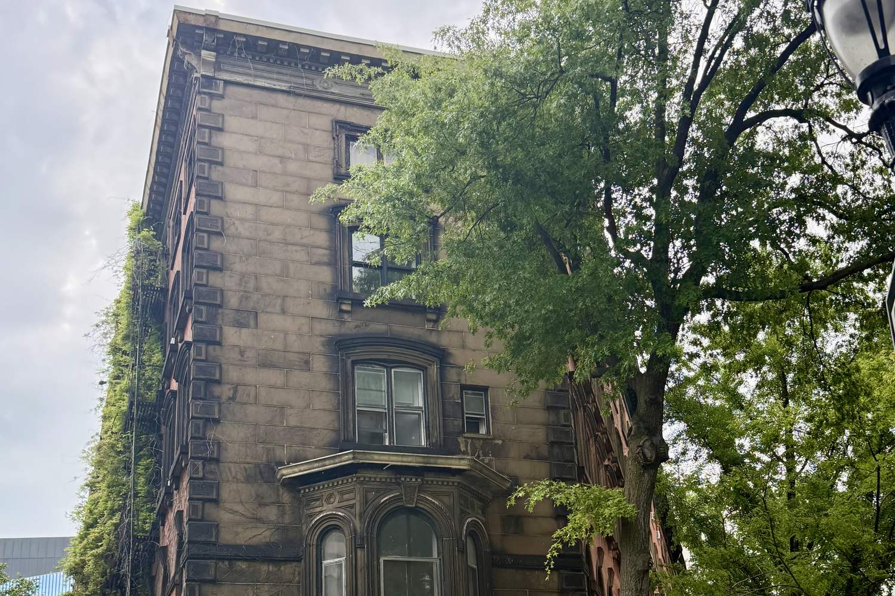

Manhattan · Neighborhood guide
East Village Neighborhood Guide
Boundaries, housing, subway lines, parks and September 2026 market figures for Manhattan's East Village.
By Glenn Velasco
Licensed Real Estate Salesperson · Compass
Updated

The East Village sits between the Bowery and the East River, from Houston Street up to 14th Street. Its housing is mostly walk-up tenement and rowhouse buildings, with co-ops, condo conversions and some newer buildings mixed in. This guide covers where the neighborhood begins and ends, what kinds of homes you'll find, how to get around, and what the market looks like now. Glenn Velasco is a Licensed Real Estate Salesperson at Compass who works with buyers, sellers and renters in the East Village.
01 / Boundaries
Where is the East Village? Boundaries and sections
The East Village is generally the area east of the Bowery and Third Avenue, south of 14th Street and north of Houston Street, extending east to the East River. Neighborhood boundaries in New York City aren't officially set, so other sources may draw them slightly differently. Its neighbors are the Lower East Side to the south, NoHo to the west, and Stuyvesant Town to the northeast.
The East Village has three named sections: Alphabet City, east of First Avenue, named for Avenues A, B, C and D; Little Ukraine, near Second Avenue and 6th and 7th Streets; and the Bowery, around the street of the same name. The neighborhood is in Manhattan Community District 3. Its ZIP codes are 10003, west of First Avenue, and 10009, east of First Avenue.
02 / History
A short history: from Stuyvesant's farm to the East Village
In the 17th century this land was farmland, or "boweries," and Peter Stuyvesant, director-general of New Netherland, had his farm here. Stuyvesant Street, which runs at an angle to the surrounding blocks, is a remnant of a street plan laid out on the Stuyvesant property before the city's 1811 grid; the rest of the neighborhood follows the grid. Through the 19th century the area filled with rowhouses and then tenements, and the New York State Tenement House Act of 1901 changed the rules for how new tenements had to be built. The area was long considered part of the Lower East Side; the "East Village" name came into common use in the 1960s.
Several buildings and districts are designated by the NYC Landmarks Preservation Commission, including the St. Mark's Historic District (1969), the East Village/Lower East Side Historic District (2012), Webster Hall (built 1886, designated 2008), and First Houses on East 3rd Street and Avenue A, built in 1935–36 as the first public housing project in the United States and designated in 1974. Cooper Union, founded by Peter Cooper in 1859, is on Cooper Square at the neighborhood's western edge; Abraham Lincoln gave his 1860 Cooper Union address in its Great Hall.
03 / Housing
East Village apartments: walk-ups, co-ops and condos
Tenements and walk-ups
Much of the East Village's housing is in four- to six-story walk-up buildings, many of them built as tenements in the late 19th and early 20th centuries. Apartments in these buildings tend to be compact, and layouts vary a lot from building to building, so floor plans, light and the building's condition matter as much as square footage. Many walk-ups have no elevator, which is worth weighing for the upper floors.
Rowhouses and historic districts
There are 19th-century rowhouses on several blocks. The St. Mark's Historic District, centered on St. Mark's Church in-the-Bowery, includes much of Stuyvesant Street and part of East 10th Street, with Federal and Italianate houses. In historic districts, exterior changes need Landmarks approval, which is worth knowing before you plan a renovation.
Co-ops, condos and rentals
The East Village has many co-op buildings, some of them converted walk-ups, along with condo conversions and newer condominium buildings. Co-ops require board approval and a full financial package, and many limit financing, subletting or pied-à-terre use. If you're coming from abroad, condos are usually the simpler route to ownership, because co-op boards often ask for U.S. financial history. Glenn can walk you through the difference in English, Spanish, Italian or French. Rentals range from walk-up apartments to units in condos and co-ops rented by their owners, where the building's own rules apply.
04 / Market snapshot
East Village real estate market, September 2026
These figures come from public data sources, each measured differently, so read them as a range rather than a single price:
- Median asking price
- $1,599,000
- StreetEasy Data Dashboard, September 2026. This is the median asking price of listings that month.
- Median asking rent
- $4,995/mo
- StreetEasy Data Dashboard, September 2026
- Median sale price
- $1,093,694
- Over the three months ending September 2026, up 25.0% year over year, per Redfin. Redfin also reports a median of 90 days on market.
Sources: StreetEasy Data Dashboard, September 2026; Redfin East Village Housing Market, three months ending September 2026.
The East Village has relatively few sales in any given month, so these medians move around. StreetEasy's September asking median was higher than in June, July and August, when it ranged from $1,270,000 to $1,285,000, and Redfin's year-over-year change reflects a small number of sales. Whether you’re looking at East Village apartments for sale or for rent, Glenn can pull recent comparable sales and rentals for the building you have in mind. If you already own in the East Village, you can request a free valuation.
05 / Subway lines
Getting around: East Village subway lines
The East Village is served by these stations on its edges, with the closest stop depending on the block:
- Astor Place (6), at the western edge
- 3 Avenue (L) and 1 Avenue (L), along 14th Street at the northern edge
- 2 Avenue (F), at Houston Street on the southern edge
Nearby, 14 Street–Union Square has the 4, 5, 6, L, N, Q, R and W, 8 Street–NYU has the R and W, and Bowery has the J and Z. Blocks in Alphabet City, east of First Avenue, are a longer walk from the subway.
06 / Parks and landmarks
Parks and landmarks
Tompkins Square Park, in Alphabet City between 7th and 10th Streets and Avenues A and B, covers 10.5 acres and is home to the city's first dog run. East River Park runs along the river between the FDR Drive and the water, from Montgomery Street to East 12th Street. The Tompkins Square Library, a New York Public Library branch at 331 East 10th Street, is in a Carnegie library building that opened in 1904.
07 / Public schools
Public schools
Public schools. The East Village is in Community School District 1, which NYC Public Schools lists as one of three districts where all elementary schools are non-zoned: District 1 residents apply to the district's schools and get priority at all of them. One District 1 public elementary school in the neighborhood is The STAR Academy – P.S. 63, at 121 East 3rd Street. School zones change, so confirm current zoning and school information for any address with NYC Public Schools' Find a School (opens in a new tab) search.
08 / Buying or renting with Glenn
Buying or renting in the East Village with Glenn
Buying in the East Village comes down to understanding the building: whether it's a co-op or a condo and what the board requires, the condition of an older walk-up, its landmark status, the offering plan if it's new construction, and how a particular apartment compares with similar ones nearby. Glenn handles that work for buyers, sellers and renters. As part of the M Team at Compass, he specializes in international buyers and investors, condos, co-ops and rentals, and he works in English, Spanish, Italian and French.
Planning a purchase? Start with the Buyer's Guide. Looking to rent? The Renter's Guide covers documents, income requirements and applications. Then contact Glenn at 929.392.3707 or glenn.velasco@compass.com.
09 / FAQ
East Village FAQ
What are the boundaries of the East Village?
The East Village is generally the area east of the Bowery and Third Avenue, south of 14th Street and north of Houston Street, extending east to the East River. Neighborhood boundaries in New York City aren't officially set, so other sources may differ slightly.
What is Alphabet City?
Alphabet City is the eastern section of the East Village, east of First Avenue, named for Avenues A, B, C and D. Tompkins Square Park is in Alphabet City.
What subway lines serve the East Village?
The 6 stops at Astor Place, the L stops at 3rd Avenue and 1st Avenue along 14th Street, and the F stops at 2nd Avenue at Houston Street. Union Square, 8th Street–NYU and Bowery stations are nearby.
What kinds of homes are in the East Village?
Mostly walk-up tenement buildings and 19th-century rowhouses, along with co-ops, condo conversions and some newer condominium buildings. Several blocks are in landmarked historic districts.
How much does it cost to live in the East Village?
StreetEasy's September 2026 data shows a median asking price of $1,599,000 and a median asking rent of $4,995 a month. Redfin reports a median sale price of $1,093,694 for the three months ending September 2026. The median asking rent is the closest public measure of the average rent in the East Village. Prices vary widely by building and apartment, so ask Glenn for recent comparable sales.
Is the East Village part of the Lower East Side?
Historically, yes. The area was long considered part of the Lower East Side, and the “East Village” name came into common use in the 1960s. Today the two are usually treated as separate neighborhoods, with Houston Street as the dividing line, though boundaries in New York City aren’t officially set.
Can Glenn Velasco help me buy or rent in the East Village in Spanish, Italian or French?
Yes. Glenn Velasco is a Licensed Real Estate Salesperson at Compass who works with buyers, sellers and renters in English, Spanish, Italian and French, including international buyers. Reach him at 929.392.3707 or glenn.velasco@compass.com.
10 / Sources
Sources
Sources, each checked October 28, 2026: StreetEasy Data Dashboard, September 2026 (opens in a new tab); Redfin, East Village Housing Market (opens in a new tab); Wikipedia, East Village, Manhattan (opens in a new tab); NYC Landmarks Preservation Commission, East Village/Lower East Side Historic District designation report (2012), via the NYC Government Publications Portal (opens in a new tab); Wikipedia, St. Mark's Historic District (opens in a new tab); Wikipedia, List of New York City Designated Landmarks in Manhattan below 14th Street (opens in a new tab); Wikipedia, Cooper Union (opens in a new tab); Wikipedia, Tompkins Square Library (opens in a new tab); NYC Parks, Tompkins Square Park (opens in a new tab); MTA subway stations data (opens in a new tab); NYC Public Schools, Kindergarten admissions (opens in a new tab); NYC Public Schools, The STAR Academy – P.S. 63 (opens in a new tab); NYC Open Data, School Zones 2024–2025 (opens in a new tab); NYC Public Schools, Find a School (opens in a new tab).